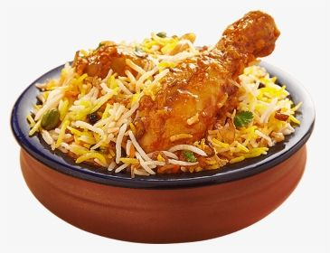

Briyani

Biryani Recipe
Description:
Biryani is a popular South Asian rice dish that is made with a variety of spices and ingredients.
Ingredients:
- 1 kg basmati rice
- 1 kg chicken, cut into pieces
- 2 onions, sliced
- 2 tomatoes, chopped
- 2 tbsp biryani masala
- 1 cup yogurt
- 1 cup chopped cilantro
- 1/2 cup chopped mint leaves
- 1/2 cup oil or ghee
- Salt, to taste
- Water, as needed
Instructions:
- Wash and soak the rice in water for 30 minutes.
- In a separate pan, heat the oil and fry the onions until golden brown. Remove half the onions and keep aside.
- Add the chicken to the remaining onions and fry until browned.
- Add the tomatoes, biryani masala, yogurt, cilantro, mint leaves, and salt to the chicken and mix well.
- Drain the rice and add it to the chicken mixture. Add enough water to cover the rice by 1 inch.
- Cover the pan and cook on low heat for 20 minutes, or until the rice is cooked and the water has been absorbed.
- Remove from heat and let it sit for 5 minutes. Fluff the rice with a fork and sprinkle the reserved fried onions on top.
- Serve hot with raita and salad.